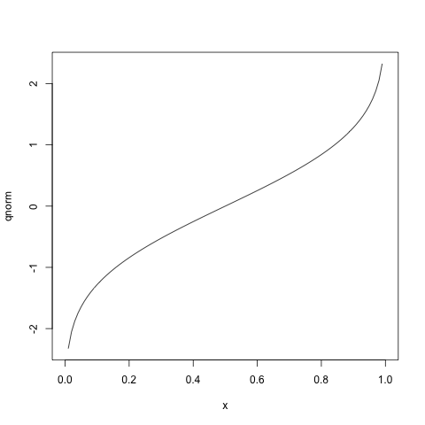

Creating a site with Pelican and org-mode
Mon 26 May 2014 by Noah HoffmanTable of Contents
Never one to pass up the opportunity for yak-shaving, I thought I'd finally try to settle on a publishing platform for various notes and other content that I have scattered about on the web.
I much prefer to generate content in org-mode, but I just couldn't manage to get org-publish to work as I wanted. When I learned that the Pelican static site generator could import html and saw another effort to use the two together, I thought I'd give it a shot.
Pelican is pretty easy to get started with:
virtualenv borborygmi-env source borborygmi-env/bin/activate pip install pelican ghp-import pelican-quickstart
Which was enough to determine that it would be pretty smooth sailing.
org-mode integration
Since I already have some tools for exporting org-mode from the command line, it was pretty easy to write an exporter for this purpose. Pelican can import html content with page metadata provided in the header.
Choosing a theme
There are plenty of choices over at the pelican-themes repository, and there were a number that seemed to work well (for the time being) without any modification at all.
For convenience, I just added the themes repository as a git submodule.
Here are some I liked:
- bootstrap
- bootlex
- dev-random2 (though I'd have to do some translation)
- tuxlite_tbs
- tuxlite_zf (although I prefer more contrast between text and code)
- zurb-F5-basic
Settled on tuxlite_tbs (thanks, chanux).
Hosting on github pages
Thanks to the magical ghp-import, hosting on GitHub pages is as easy as
ghp-import -p output
Experiments
Second-level headline
So let's try out some org-mode markup:
| here's | a | table |
|---|---|---|
| with | values | |
| in | some | cells |
Hey, a bandicoot!
{kind=link}

png('getting-started/qnorm.png')
plot(qnorm)
invisible(dev.off())

pwd
ls
/Users/nhoffman/src/borborygmi/org-content getting-started getting-started.org getting-started.org89510TnC